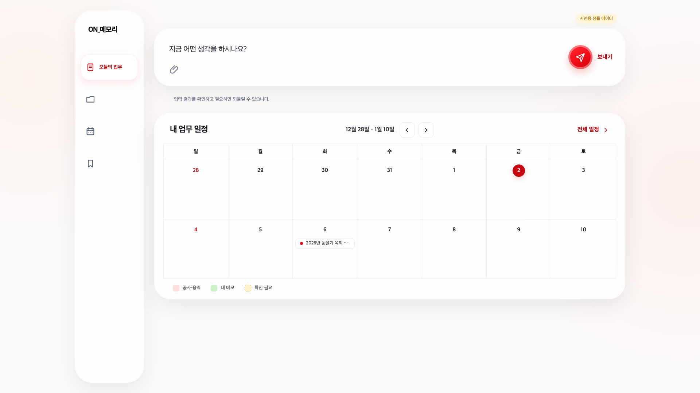

업무·자료 입력
홈에 지시·메모를 적고, 관련된 최근 3년 문서를 업무에 연결합니다.
회사 문서를 한 번에 바꾸는 프로젝트가 아니라, 직원이 도움을 받으며 일하는 과정이 자연스럽게 다음 업무의 데이터가 되게 만드는 AX 전환 제안입니다.
무엇을 만드나 일정·문서·기준·결과물을 한 업무 단위로 연결하고, 수행 중 메모까지 다음 업무에 재사용하는 AI 업무 도우미입니다.
누구를 위해 한글·엑셀·전자결재 문서를 반복해서 찾고 재작성하는 유지보수 직원과 사무직원을 위한 서비스입니다.
왜 공유폴더·개인 폴더·전자결재에 흩어진 자료 때문에 준비 시간이 길고, 담당자가 바뀔 때 업무 맥락이 사라지는 문제를 해결합니다.
핵심 가치 사용자는 데이터 전환 작업이 아니라 자신의 업무 도움을 받으며, 그 과정 자체가 회사의 AX 데이터로 축적됩니다.
홈에 지시·메모를 적고, 관련된 최근 3년 문서를 업무에 연결합니다.
언제, 참고자료, 적용기준, 결과물의 네 가지 요소로 구조화합니다.
AI가 찾은 날짜는 바로 확정하지 않고 사용자가 확인·수정합니다.
작업대에서 문서·기준·체크리스트·초안을 확인하며 업무를 진행합니다.
수행 중 메모·판단·결과물이 같은 업무 ID에 남아 다음 반복 업무에 재사용됩니다.
완료 결과가 다음 업무의 시작 자료가 되는 순환 구조 ↺

HTML5, CSS3, Vanilla JavaScript SPA, 반응형 리퀴드 글래스 UI, 브라우저 localStorage
팀원 Node.js 18+ 내장 HTTP 엔진, 문서 파싱, OKF 온톨로지, 근거 기반 질의·예보·초안·사전점검 REST API
JSON 문서 코퍼스·fixture, 관계 그래프, 업무 ID 기반 컨텍스트 패킷. 운영 단계에서는 문서 저장소·벡터 인덱스·권한 저장소 연결 예정
Git·GitHub, Node.js·npm, Playwright, Microsoft Edge/Chrome, Codex·Claude. OpenAI API는 로컬 자연어 실험용이며 키와 사내 원문은 저장소에 올리지 않음
프론트엔드와 팀원 백엔드 응답 계약을 연결한 경진대회 통합 데모를 개발하고, 사용자 시연 동선을 테스트하고 있습니다.
기획 → 업무·데이터 모델링 → 화면설계 → 프론트/백엔드 계약 통합 → 시연 개발 → 자동·사용자 테스트 → 발표 배포